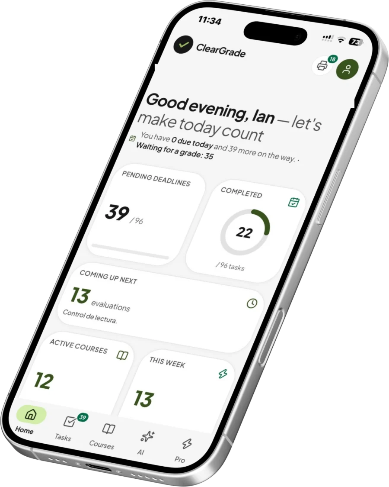
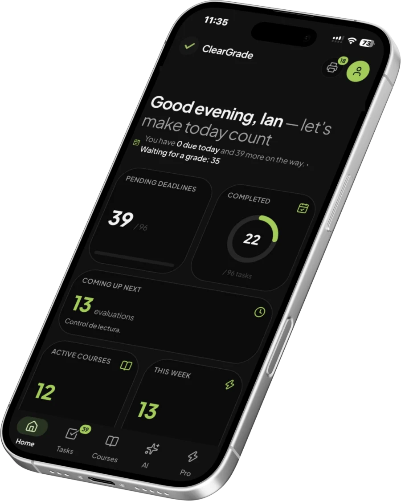

Ian F
Construyo apps completas, pulidas y con identidad
Ian F. Estudiante en Honduras. Web full-stack, hardware, creative coding e IA local.
Sobre mí
Soy Ian F, estudiante en Honduras. Aprendí por mi cuenta, rompiendo cosas: apps web completas, microcontroladores, soldadura, creative coding y modelos de IA corriendo en mi propia máquina. Me importa que lo que hago funcione y que además se sienta bien al usarlo.
Todo eso apunta a Tree, el ecosistema tecnológico que quiero fundar: hardware, software e IA pensados juntos. Todavía está en planificación, pero es la razón por la que no me quedo solo en una parte del stack.
- juegos
- Control, Detroit: Become Human, Half-Life, PortalNarrativos y lineales, con identidad. Open worlds, no.
- música
- Tame Impala, Pink Floyd, Linkin Park, Canserbero, Jamiroquai
ClearGrade
mi proyecto principal
ClearGrade es una app para estudiantes: subes el sílabo o la agenda de tus clases y la convierte en tus materias, tus tareas con fecha y lo que tienes que estudiar, para que sepas qué viene cada semana.
Abrir ClearGrade

Otros frentes
Setup y hardware
Stack y herramientas
Recomiendo
Blog y devlog
Contacto
Para proyectos, preguntas o hablar de hardware.